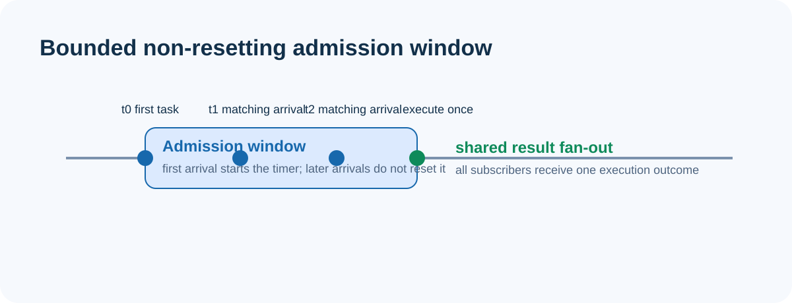
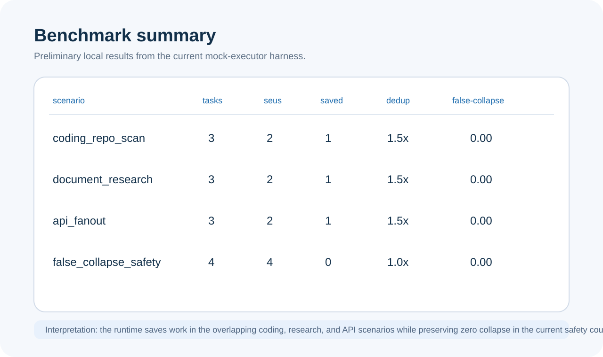

Where duplication appears
Repo scans, code search, SQL, document extraction, retrieval, and API tasks often recur across neighboring branches even when the underlying backend work is materially the same.
Laptop-First Local Middleware
Gemma4-WDC is a single-machine proof of concept where Gemma-style agents emit SQL, API, document, repo-scan, and research tasks, and a WDC-style middleware layer detects overlap, holds work briefly in a bounded admission window, executes once, and fans the result back out.

The Bottleneck
Repo scans, code search, SQL, document extraction, retrieval, and API tasks often recur across neighboring branches even when the underlying backend work is materially the same.
On modest hardware, duplicated downstream work hurts faster. Gemma4-WDC frames this as a runtime bottleneck, not just a prompt-quality issue.
Core Idea

Architecture
Simulation mode is the default. Multiple agents are lightweight or simulated, one local FastAPI backend manages SEUs, and lightweight tool backends make the runtime behavior obvious on a laptop.
Hybrid mode is optional and allows one real local model node to coexist with simulated agents without turning the project into a hardware arms race.

Coding-Agent Demo
Planner, coder, and reviewer branches ask overlapping questions about where the runtime transitions shared execution units from pending to executing. Gemma4-WDC collapses those repo scans into one SEU while a benchmark-oriented code search stays separate.
This is the right scale for a credible consumer-hardware demo: one laptop, branch-heavy local agents, and backend work that clearly should not be repeated.

Benchmarks
The harness compares naive execution against deduplicated execution for coding repo scans, document overlap, API overlap, and safety counterexamples. These are prototype numbers from mock or lightweight backends and are labeled accordingly.
| Scenario | Tasks | Execs | Saved | Dedup |
|---|---|---|---|---|
| coding_repo_scan | 4 | 2 | 2 | 2.0x |
| document_research | 3 | 2 | 1 | 1.5x |
| api_fanout | 3 | 2 | 1 | 1.5x |
| false_collapse_safety | 4 | 4 | 0 | 1.0x |

Laptop-First Mode
Multiple lightweight agents generate realistic tool tasks so the middleware value is legible without a real local model.
One real local Gemma-compatible adapter can join while the rest of the system stays lightweight and laptop-friendly.
This is a single-machine proof of concept, not a claim of full cluster throughput or many concurrent heavy model instances.
Roadmap
Make the one-node hybrid adapter easier to attach for local Gemma-family task generation or summarization.
Add richer task logs, why-collapsed annotations, and more explicit safety reasoning in the dashboard.
Only after the laptop-scale thesis is stronger should the project expand into distributed coordination and heterogeneous nodes.